© Obeo 2011 - All rights reserved. This program and the accompanying materials are made available under the terms of the Eclipse Public License v1.0
Authors Stéphane Drapeau / Yann MortierContact stephane.drapeau@obeo.fr
This section describes how to start using the BPMN2 designer either from existing BPMN2 models or by creating a new one.
Import the TravelAgency project using the menu File/New/Example....
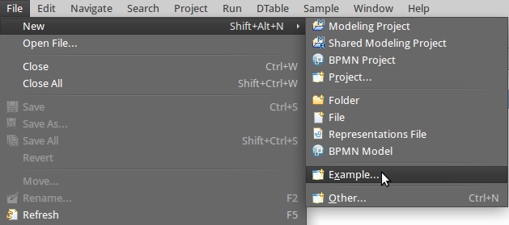
Pick the BPMN2 Samples wizard anc click on Next and then pick the Travel Agency agency sample.
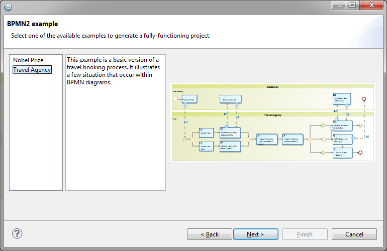
Click on Next, name your project and then click on Finish. The project appears in your workspace.
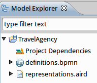
Double click on TravelAgency.aird to open the designer. You will be greeted with the process definitions table.
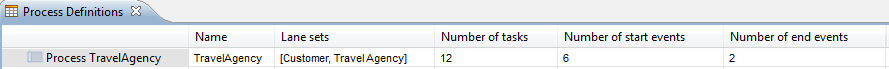
From here you can navigate to the existing process diagram by right clicking on the process.
To create a new BPMN2 project, ensure that the Modeling perspective is enabled.
You can check the active perspective in the top-right corner of the window.
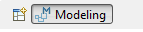
If the modeling perspective is not active then you have to open it. Click on the Open Perspective button and then select Other...
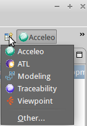
Select the Modeling perspective and the click on OK.
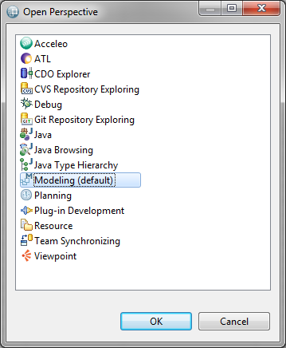
Then click on the wizard shortcuts at the top-left of the Eclipse Workbench. Select New BPMN2 Project.
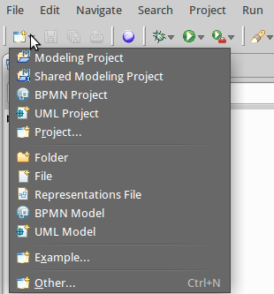
You can choose a specific name for the project.
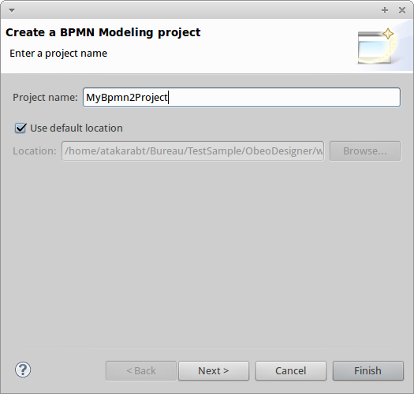
When you press the Finish button, the projects gets created and automatically enabled the BPMN2 viewpoints.
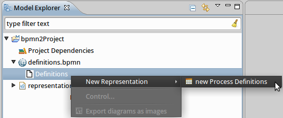
This diagram allows you to visualize and to edit a process. You can open or create this diagram from the process definitions table.
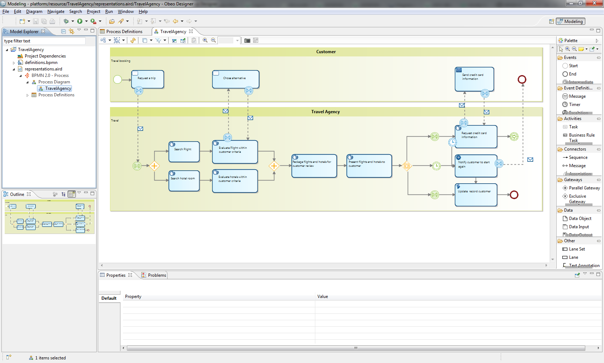